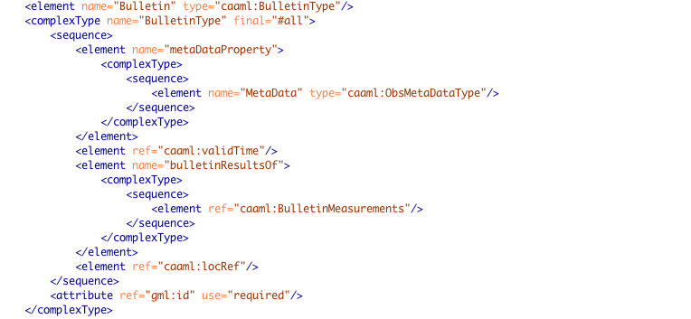
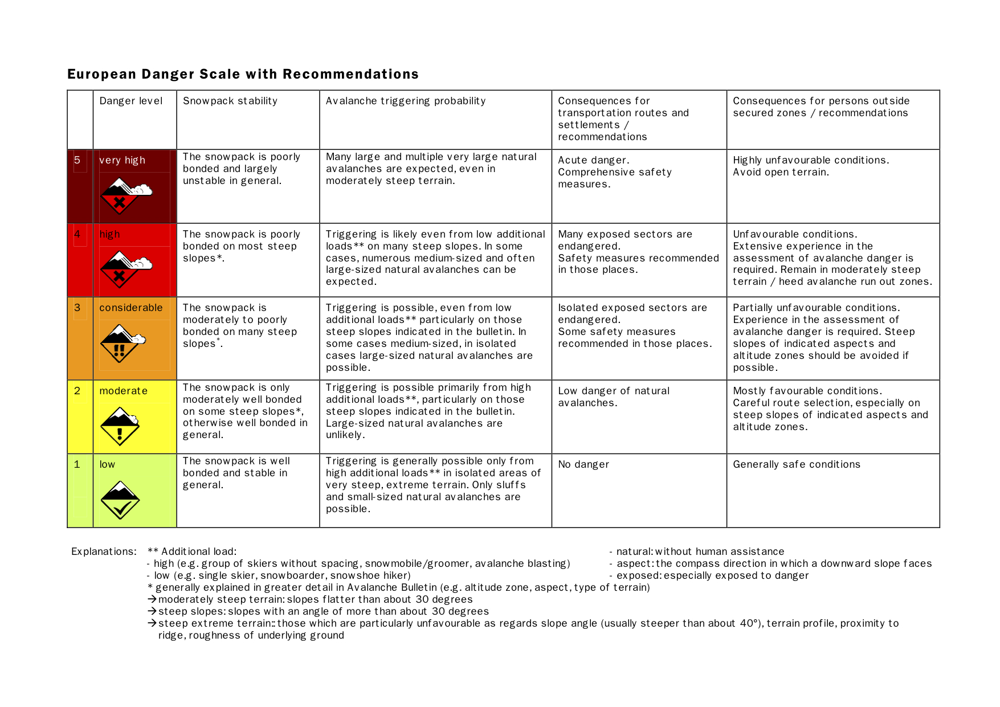
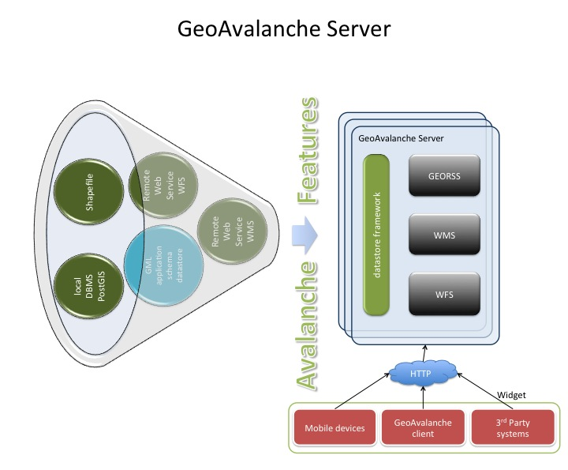
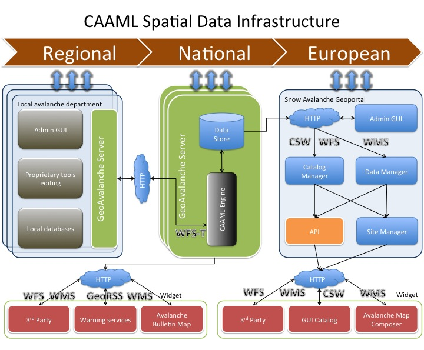

GeoAvalanche
A Spatial Data Infrastructure for avalanche awareness warning
Geoavalanche project / @geoavalanche
Agenda
- Snow avalanche risk management
- What is Geoavalanche?
- CAAML application profile
- Geoavalanche Server
- Benefits
- Changelles
Mountain Risk Management
Avalanches
dramatically:
- kill backcountry practitioners
- damage villages, settlements, infrastructure
Snow cover
frequently:
- affects hydropower generation
- is a source of water for drinkable and irrigation use
Actors
Avalanche Warning Services
- distributed offices collect avalanche and meteorological data locally
- issue nationwide nowcasting and forecasting bulletin centrally
Governments
- has to mitigate natural hazard and regulate land use
- deal with the management of resources
- are approaching to Inspire where Avalanches are issued in the Natural Risk Zones theme of Annex III
Users
Tourists
- attempt in the wilderness with a number as much as increased in the latest years
- claim innovative early warning alert systems and more avalanche awareness for safer activities
Mountain Professionists
- plan their activities more often via mobile devices
- promote and make their business on the safety of outdoor activities
- are actively involved to report snowdrift risk and snowslide-prone area as the situation evolves
Geoavalanche
- Open Source project born from Geobeyond and licensed under the GNU GPL v3 terms
- Development of a web architecture to deal with snow avalanche datasets over the Internet
- Overcome the lack of shared knowledge on snow avalanche information
- Core component of data infrastructure spatially and semantically focused
- Web 2.0 oriented
Goals
Exchange of snow avalanche information in a common standard for building Spatial Data
Infrastructure to cross-boarder interoperability.
Leverage of more avalanche awareness to mountaineers by using user-oriented services on Web
channels.
Make avalanche bulletin mostly available and hence mountain experience safe-effective.
Key concepts
- Geographical nature of snow avalanche data (spatial component)
- Geospatial standards
- Cross-boarder cooperation and harmonisation of data (Regional - National - European)
- Interoperability in mind
Technologies
Implications
- Accessing datasets by using WFS services for exchanging data on R/W operations
- Providing maps of avalanche bulletins and snow cover by using WMS services
- Enabling Third-party internet sites and mobile devices for snow avalanche geolocalisation services
CAAML
- XML grammar language initially developed and still maintained by the Canadian Avalanche Associations CAA
- Common encoding structure based on top of GML
- Currently supports the following types:
- Avalanche incident information
- Avalanche activity comments
- Avalanche observations
- Avalanche bulletins
- Avalanche closures
- Observations on the field
- Snowpack structure comments
- Snow profile observations
- Weather observations
CAAML architecture
Latest version 5.0 developed by CAA

Similar Features
- Object-Property-Value model pattern of GML
- Same flexibility in mind
- Borrows the concept of profile which permits:
- express logical limitation of elements relevant for a specific application
- maintain the ability to be validated against the overall CAAML standard
- design a common schema which raises the needs among AWS in the neighbohood of European mountains
EAWS CAAML profile
Bulletin Element Type
Courtesy of Canadian Avalanche Association
European Avalanche Danger scale
Geoavalanche Server
- Uses GeoServer to aggregate different datastores centrally
- Includes GML application schema extension for supporting 3th-party like CAAML
- Allows direct querying of complex snow avalanche features encoded by CAAML
- Enables data fusion between remote and local sources
- Achieves web mapping service for avalanche bulletins
- is INSPIRE-ready because of the abilities passed-down by GeoServer
Geospatial snow avalanche services
CAAML schema mapping
Single caaml:Bulletin:
- is observed at several distinct locations on the Earth’s surface
- has a multivalued
caaml:bulletinResultsOfproperty ofcaaml:BulletinMeasurementstype

Key effects
A CAAML data infrastructure would leverage Geoavalanche server that becomes a key role since it manages both of reading and writing operations regardless of the database schema used to store the data.
When performing WFS filter queries it can also act accordingly to OGC WFS-T transactional specification because each single service has been conformed to the same CAAML application schema.
Snow avalanche SDI for cross-border interoperability
Benefits
- Interoperability at largest scale for stakeholders, actors and users
- European - Snow avalanche Geoportal for EU, which would represent the effect of Natural Risk zones within INSPIRE
- Nationally - Geospatial product which provides avalanche bulletin maps, warning LBS to mobile users and a complement for Resource Management (Snow water equivalent)
- Regionally - A bridge to connect distributed observation centers to national agencies AWS in an easily common format
Challenges
- Schema transformation for CAAML datasets to comply with the "Natural Risk Zones" data theme
- Robustness and scalability of snow avalanche database for CAAML
- Catalogue Service for the Web (CSW)
- Implementation of map visualization services INSPIRE conformed (WMS 1.3)
- Develop of mobile LBS client (iOS, Android)